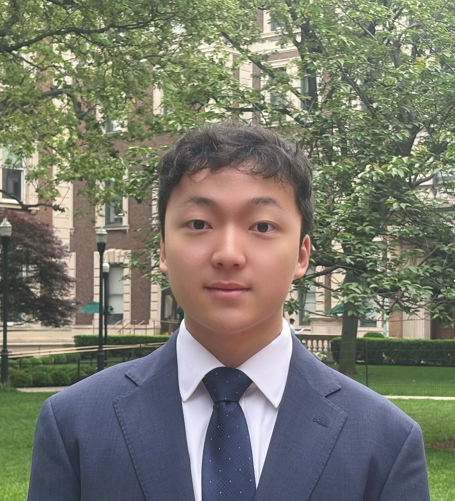

Columbia University, School of Engineering and Applied Sciences, New York, NY (2023 – May 2027)
• Major: B.S. in Computer Science | Minor: Statistics and Economics
• Egleston Scholar (top 1% of Columbia Engineering's undergraduate students) | GPA: 3.97/4.0 | Dean's List
Illinois Mathematics and Science Academy, High School Diploma, Aurora, IL (2020 – 2023)
Languages: Python, Java, C/C++, C#, CSS, HTML, JavaScript, Qiskit, Q#, R-programming, SQL, Bash
Machine Learning/Data Science Frameworks: Scikit-learn, TensorFlow, PyTorch, OpenCV, Pandas, Numpy, Matplotlib, Seaborn, Graphviz
Web Development Frameworks: Django, Next.js, Node.js, React, Supabase,AWS, MongoDB, PostgreSQL, Bootstrap, Cloudflare, SMTP, HTTP, TCP, Railway
API/Tools: Git, Unity, Vim, Jupyter, Visual Studio, .NET Test, MRTK, Windows/Linux OS, Microsoft Excel/Office
Math: Probability Theory, Abstract Algebra, Differential Equations, Linear Algebra, Multivariable Calculus
CS: Natural Language Processing, Advanced Programming, Machine Learning, Data Structures
Stats/Econ: Stochastic Processes, Statistical Inference, Intermediate Macroeconomics/Microeconomics
- IMC Prosperity Quantitative Trading Competition, Ranked top 500 out of 12,000+ students worldwide, 2025
- Almaworks Fellowship, Columbia Organization of Rising Entrepreneurs (CORE) Startup Accelerator, 2025
- Cognizant, Elevate Leadership Summit, Technology Consulting Summer Program, 2025
- Goldman Sachs, Virtual Insight Series, 2024
- Susquehanna International Group (SIG), Discovery Day Fellow, 2024
- SIG NYC Poker Tournament, Final Three Tables, Top 10 in Qualifiers, 2024
- Organizing Committee Member, Columbia University Institute for Operations Research and the Management Sciences (INFORMS) Board: Leading and Organizing Financial Engineering and Data Science events.
- Elected Board Officer, Columbia University Scholastic Bowl: Leading and Representing team at national events.
- Jason Qin, Lindsay Puckett, & Xin Qian. (2020, December). Image Based Fractal Analysis for Detection of Cancer Cells. In 2020 IEEE International Conference on Bioinformatics and Biomedicine (BIBM) (pp. 1482-1486).
(www.computer.org/csdl/proceedings-article/bibm/2020/09313176/1qmg3CpHoPe)
- Jason Q. Qin, Xin Qian, Computing Fractal Dimension for Digital Pathology Cancer Cells Detection, Joint Mathematics Meetings, January 6th, Boston, 2023.
(meetings.ams.org/math/jmm2023/meetingapp.cgi/Paper/22193)
- Egleston Scholar: top 1% of Columbia Engineering's undergraduate students
- Dean's List, Academic Honor, Columbia University, 2023-Present
- United States Presidential Scholars Semifinalist, 2023
- National Merit Finalist, 2023
- American Invitational Math Examination, 2023, 2022
- American Math Contest 12, Honor Roll, 2023, 2022
- National Community Service Award - Ambassador, UN - USA, 2022, 2021